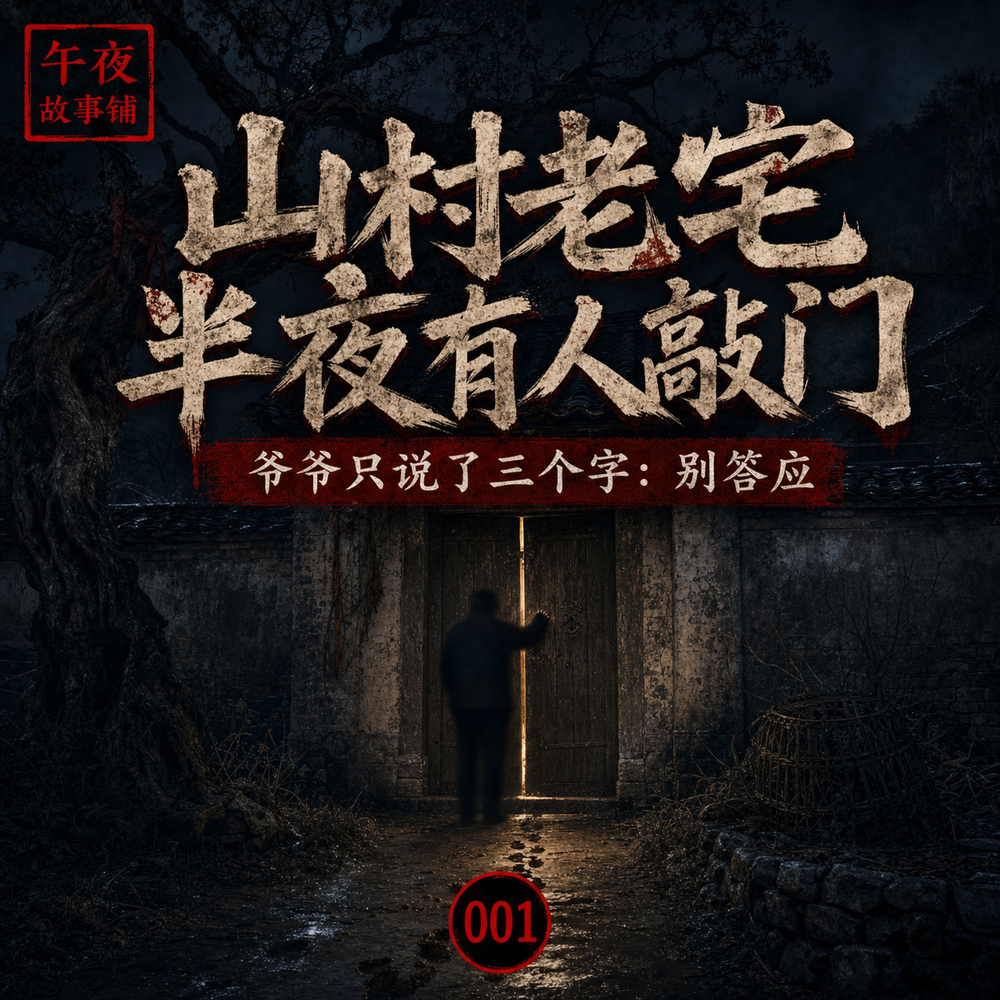
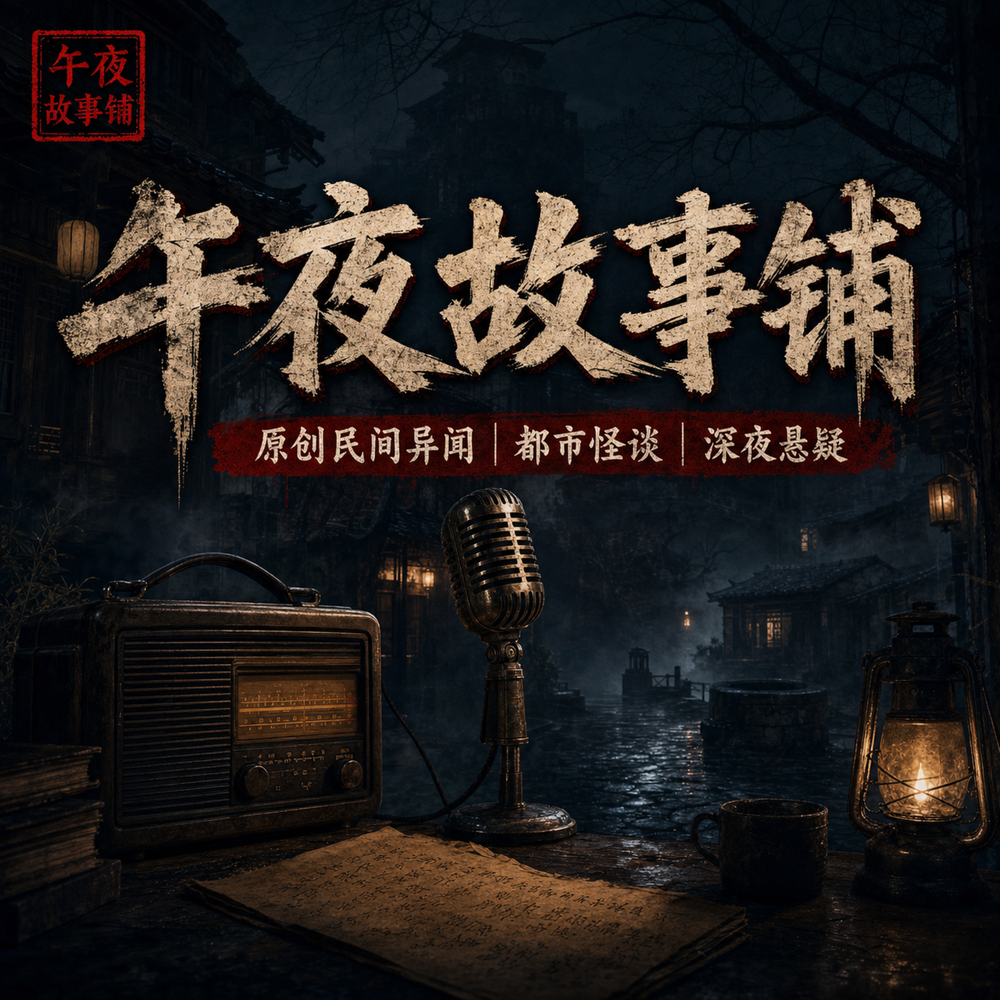
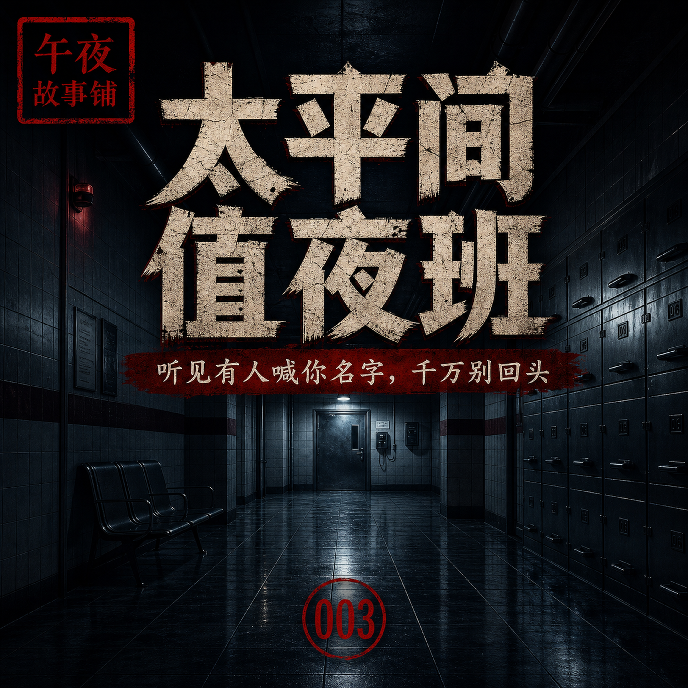
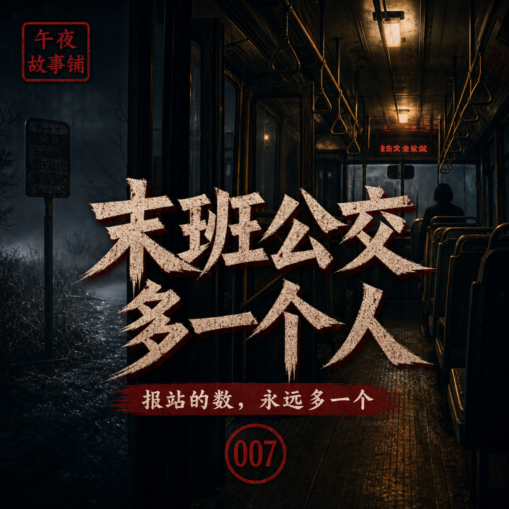
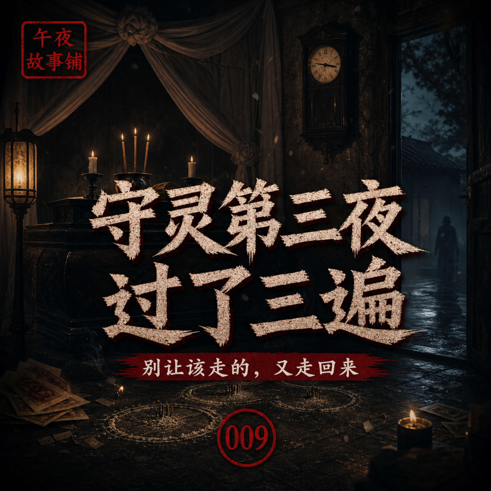

山村老宅半夜有人敲门，爷爷只说了三个字：别答应
老家山里的旧宅，半夜总有人敲门。爷爷临睡前只交代三个字：别答应。那一晚，我以为门外只是过路人，直到第二天看见门槛上的泥印，才明白爷爷为什么一夜没合眼。原创民间异闻故事，适合睡前和深夜收听。本故事为原创虚构民间异闻演绎，请勿代入现实。
音频已生成

每天几分钟，讲一个原创民间异闻、都市怪谈和悬疑故事。适合睡前、通勤和深夜收听。故事均为原创虚构演绎，请勿代入现实。
RSS Feed
老家山里的旧宅，半夜总有人敲门。爷爷临睡前只交代三个字：别答应。那一晚，我以为门外只是过路人，直到第二天看见门槛上的泥印，才明白爷爷为什么一夜没合眼。原创民间异闻故事，适合睡前和深夜收听。本故事为原创虚构民间异闻演绎，请勿代入现实。
音频已生成

夜班司机老周在城西老路拉到一个沉默怪客。对方只说去“尽头”，下车时没有付款，只留下一个纸包。第二天，老周在后座发现一把不该出现的黑伞，伞柄上还刻着四个字。原创都市异闻故事，适合深夜收听。本故事为原创虚构民间异闻演绎，请勿代入现实。
音频已生成

小陈第一次在医院太平间值夜班，老班长只交代三条规矩：别数柜门，别接内线，听见有人喊名字别回头。凌晨三点，他的名字从最里面那排冷柜传了出来。原创医院守夜悬疑故事，适合深夜收听。本故事为原创虚构民间异闻演绎，请勿代入现实。
音频已生成

村口有口老井，每年七月都要用石板封住。老人说，封井那晚，谁听见井里有人叫你，都不能答应。少年阿青不信，偷偷掀开石板往下看了一眼，从此村里每一户人家的水缸，都映出同一张脸。本故事为原创虚构民间异闻演绎，请勿代入现实。
音频已生成

三个人进山寻古墓，只带回一盏不会熄灭的铜灯。起初村里人都说他们发财了，直到夜里灯光照过每一张脸，大家才发现，回来的不一定是原来那三个人。原创古墓异闻故事。本故事为原创虚构民间异闻演绎，请勿代入现实。
音频已生成

外婆的老宅里有一面祖传的梳妆镜，她活着时，每到天黑就用黑布把镜子蒙上。外婆走后我搬回老宅，掀开了那块布。起初我只是觉得镜子干净得反常，后来才发现，镜子里的那个我，每一个动作都比我慢半拍——直到有一晚，它先动了。本故事为原创虚构民间异闻演绎，请勿代入现实。
音频已生成

城郊有一趟开往终点站的末班公交，司机老郑跑了八年。这趟车的报站器有个怪毛病：每过一站，它播报的在车人数，总比实际多出一个。老郑数过很多遍，从来没数错。直到那个雨夜，他终于忍不住，回头把全车的人，一个一个数到了底。本故事为原创虚构民间异闻演绎，请勿代入现实。
音频已生成

小林是医院透析中心的夜班技师，负责在没有病人的深夜看护那一排机器。带他的老技师只交代一件事：三号机停用了，别去碰，更别去修。可那天凌晨，已经断电封存的三号机，屏幕自己亮了，泵也自己转了起来——它正在给一个不存在的病人，做一场早就结束的透析。本故事为原创虚构民间异闻演绎，请勿代入现实。
音频已生成

按老家的规矩，老人过世要守三夜灵，灵前的长明灯不能灭，守灵的人不能睡。轮到我守第三夜时，我盯着墙上的挂钟熬到了天快亮。可鸡叫之后，天没有亮。挂钟又一格一格，倒回了昨夜的开头。这一夜，我守了三遍，每一遍，棺材里的爷爷，都比上一遍离我更近一点。本故事为原创虚构民间异闻演绎，请勿代入现实。
音频已生成

山里有一种夜集，只在阴历月底没有月亮的夜晚，开在山坳里的老渡口边。集上什么都卖，价钱便宜得不像话。爷爷带我去过一次，临走前反复叮嘱：可以看，可以买，但买东西一定要给钱，绝不能收别人白送的东西。因为夜集的规矩是——收了谁的东西，就得拿自己，去还谁。本故事为原创虚构民间异闻演绎，请勿代入现实。
音频已生成